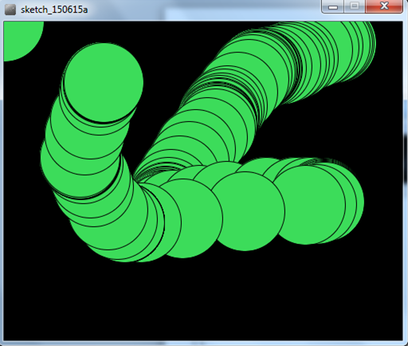
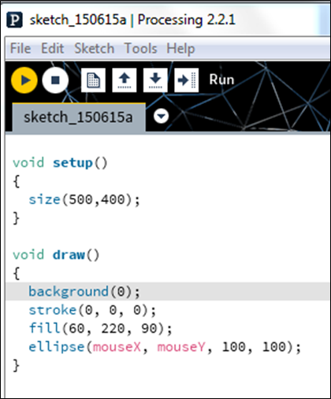
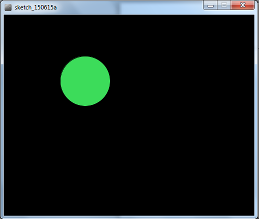
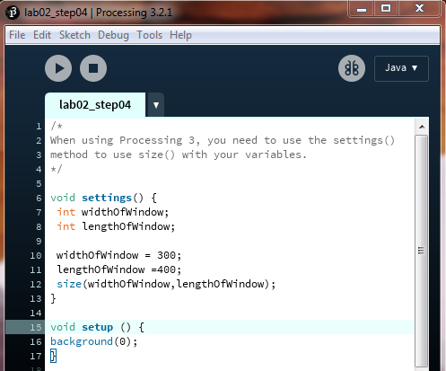
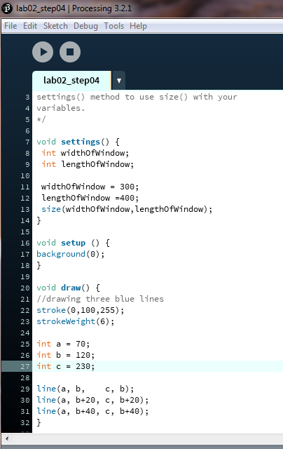
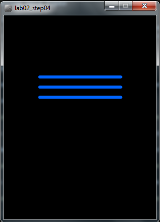
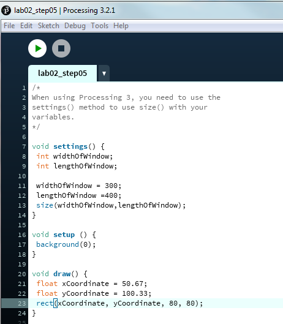
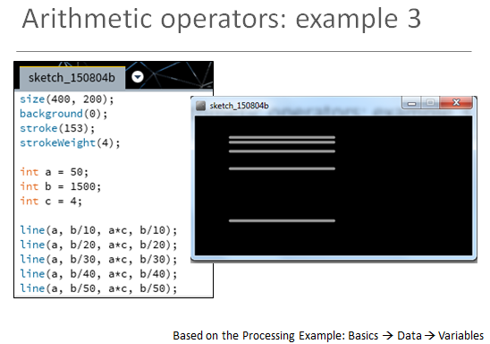
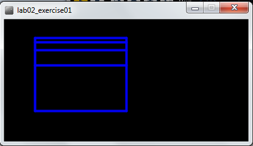

Objectives
On completion of this lab you should:
be able to write code to animate simple drawings.
be aware of the system variables in the PDE and be able to use them effectively.
understand primitive data types and be able to use them in non-complex problems.
Solution to Previous Lab
The solution for the previous lab can be found here.
Remember our lab advice!
- Your labs are not a race to be the first student finished.
- It is very important that you:
- take your time.
- read the instructions carefully.
- ask your lecturer to explain concepts that you don't understand; that is what we are here for!
- attend ''ALL'' your classes; attendance will be taken.
- where code is given in labs, don't cut and paste it; maximise your learning by typing the code in.
Basic Animation
- We will use the following built-in functions to animate our drawings:
- setup()
- draw()
A note on the setup() function
- setup() is called once when the program starts and should not be called again.
- setup() can set the screen size and background colour.
- There can only be one setup() function for each sketch.
A note on the draw() function
- You should never call the draw() function.
- Processing automatically calls the draw() function straight after the setup() call.
- draw() continuously executes the code contained inside it.
- There can only be one draw() function for each sketch.
Animating Ellipses
Open the Processing Development Environment (PDE). If you are using the college computers and you cannot recall how to do this, follow these steps:
- Open Windows Explorer by holding down the windows key and pressing the letter E once.
- When Windows Explorer opens, double click on:
- the C:
- then the dev folder
- then the processing folder
- then the processing-2.2.1 folder
- the processing application.
Enter the following code:

Using the ''File'', ''Save as...'' menu options, save this sketchbook as ''lab02_step02''.
Run the code. You should have animation similar to the screen shot below.

- Can you explain why there are multiple circles drawn? Why not just one circle?
Animating Ellipses (continued)
We are now going to change the code (from the previous step) so that only one circle is shown when you move the mouse.
Amend your code so that the background function is in the draw method instead of the setup method:

- Run the code. You should have animation similar to the screen shot below.

- Can you explain why there is only one circle drawn as we move our mouse?
Playing with the System Variables
- What would happen to our animation if we swapped the ''mouseX'' and ''mouseY'' system variables in the ''ellipse'' function with each other? Make this change (the code change is below, if you need it) and see if you can figure out what is going on.
ellipse(mouseY, mouseX, 100, 100)- What would happen to our animation if we changed our ellipse function to be this:
ellipse(width, mouseY, 100, 100)- Make this change and see if you can figure out what is going on.
Primitive Data Types
- In Java, there are:
- four whole number data types: byte, short, int, long.
- two decimal number data types: float (default in Processing) and double (default in Java apps).
- a single character data type: char.
- a true/false data type: boolean.
Using the int data type
Create a new Sketchbook in your PDE and save it as ''lab02_step04''.
Enter the following code:

Run the code. You should see a window with a width of 300 and a length of 400 and a black background.
Update the code as shown in the screen shot below:

- Run the code. Your window should now have three blue lines similar to the screen shot below:

- Update the code to produce the following output. Note: you must use the a,b,c and d variables to generate these lines:

A syntax error
Update the code by changing ''int'' to ''Int'' (uppercase I). Run your code again. What happened? Can you explain what happened? Ask your lecturer to explain it if you are not sure.
Change ''Int'' back to ''int''.
Another syntax error
Update the code by changing the amount assigned to variable ''a'' from 70 to 70.56. Run your code again. What happened? Can you explain what happened? Ask your lecturer to explain it if you are not sure.
Change 70.56 back to 70.
Save and close the sketchbook.
Primitive Data Types
Using the float data type
Create a new Sketchbook in your PDE and save it as ''lab02_step05''.
Enter the following code:

- Run the code. You should see a grey window with a white square drawn in it.
Not a syntax error!
Update the code by changing the amount assigned to the xCoordinate variable from 50.67 to just 50
Run the code. Why did it work? Can you explain what happened? Ask your lecturer to explain it if you are not sure.
Change the amount assigned to the xCoordinate variable back to 50.67.
A syntax error
Update the code by changing ''float'' to ''double''. Run your code again. What happened? Can you explain what happened? Ask your lecturer to explain it if you are not sure.
Change ''double'' back to ''float''.
Another syntax error
Update the code by renaming the ''yCoordinate'' variable name to ''xCoordinate''. Run your code again. What happened? Can you explain what happened? Ask your lecturer to explain it if you are not sure.
Change the code back.
Save and close the sketchbook.
Exercises
The exercises are typically based on the material we covered in the previous steps in this lab.
For each exercise listed below, open a new sketchbook.
For the challenge exercises you may need to visit the Processing website for additional information.
When you are finished all your exercises, zip all your exercises into one file and upload them into lab02 dropbox in Moodle.
Exercise 1 (static drawing)
- The following is a slide from your lecture:

- Using this code as a starting point, make the following changes so that your output looks like this:

- NOTE: the object of this exercise is to use the arithmetic operators (e.g. +,-,/,*) on the variables (a,b,c).
Exercise 2 (static drawing)
- The object of this exercise is to produce the same output as Exercise 1, but instead of using variables (a,b,c) use appropriate system variables (i.e. width, height) and perform artihmetic operations on them to produce the desired output.
Exercise 3 (animated drawing)
Produce the following animation:
- a white circle is drawn when you move the mouse; only one circle is visible at one time (i.e. all previous ones are cleared).
- the x and y coordinates for the circle are dependent on the mouse position (hint: use system variables mouseX and mouseY).
- the size of the circle is determined by the y mouse coordinate.
When you run your code, your circle show grow in size as you move your mouse pointer down the window and reduce in size when you move your mouse up the window. When you move your mouse horizontally, the circle should stay the same size.
Exercise 4 (animated drawing)
Using exercise 3 as a starting point, add the following animation to it:
- a black circle is drawn when you move the mouse (all previous black circles are cleared).
- the x coordinate for the circle is the mouseY coordinate and the y coordinate for the circle is mouseX.
- the size of the circle is determined by the x mouse coordinate.
When you run your code, the black circle should overlap the white circle when you drag your mouse from (0,0) diagnolally down to (100,100). When you move your mouse horizontally, the black circle show grow/shrink in size. It remains the same size when the mouse is dragged vertically. Note that the white circle's behaviour hasn't changed.
Challenge Exercise 1 (animated drawing with no cursor)
- Do some research to figure out how to turn the mouse pointer (cursor) off.
- Implement this functionality in any one of you exercises above.
Challenge Exercise 2 (animated drawing with a different cursor)
- Do some research to figure out how to turn the mouse pointer (cursor) into a hand.
- Implement this functionality in any one of you exercises above.
Challenge Exercise 3 (animated drawing using a drag effect)
- Do some research into the Processing variables: pmousex and pmousey.
- Write a Processing sketch that uses these variables.